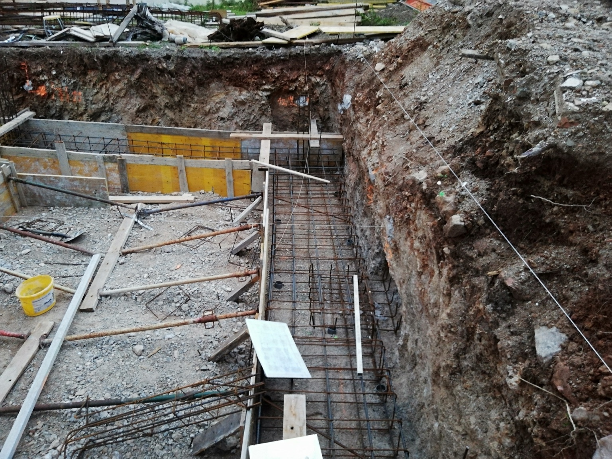
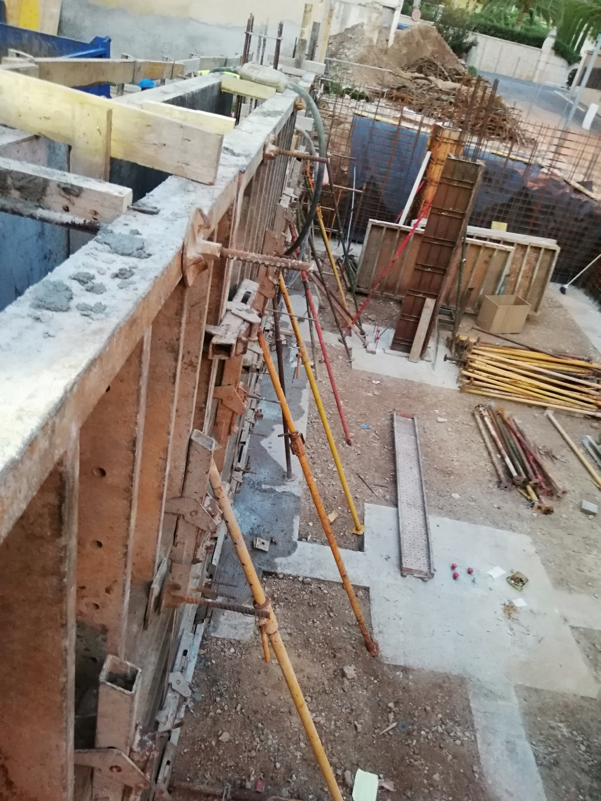
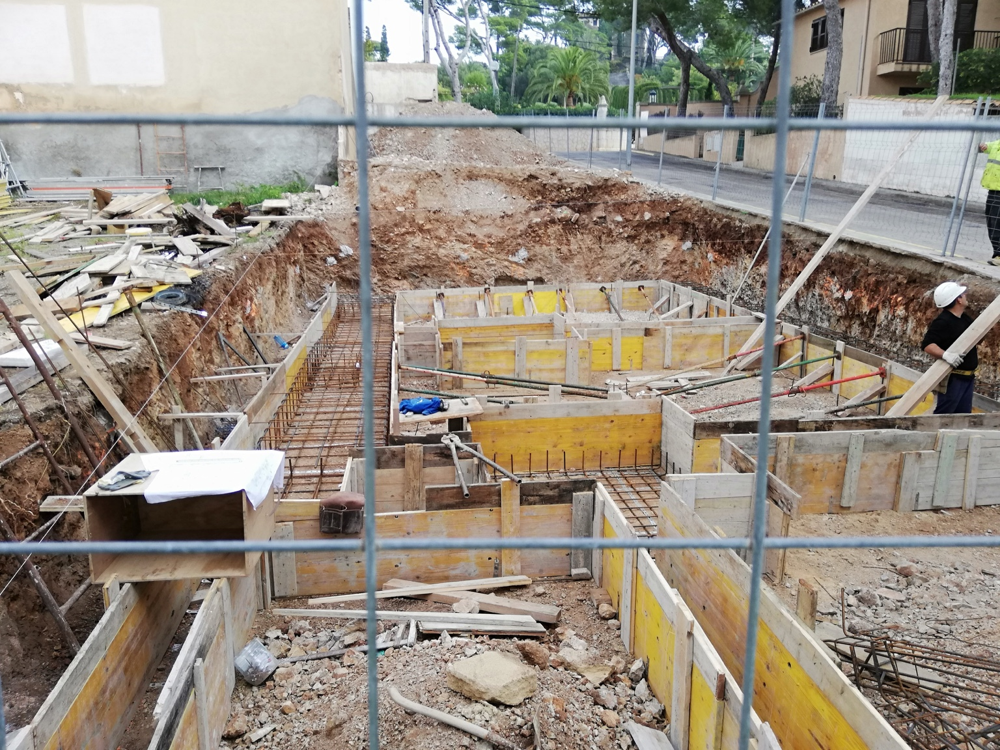
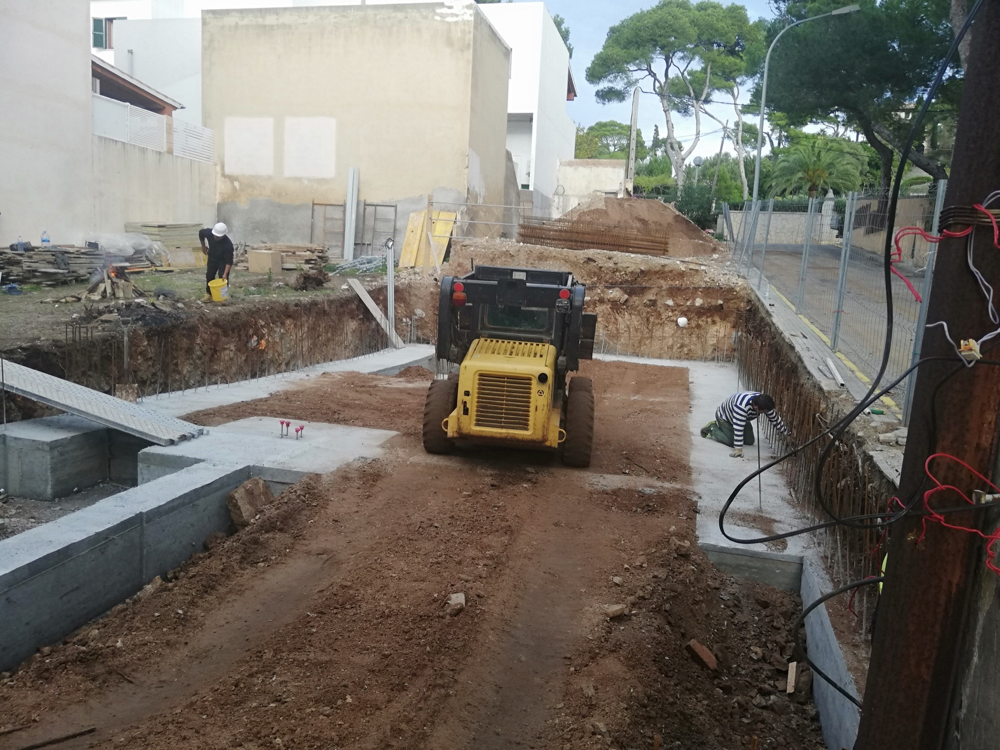
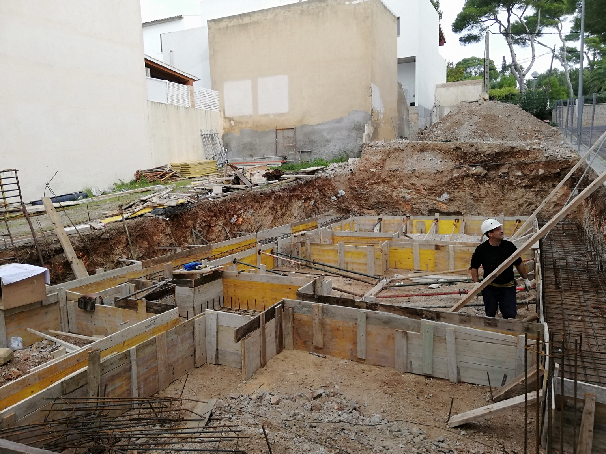
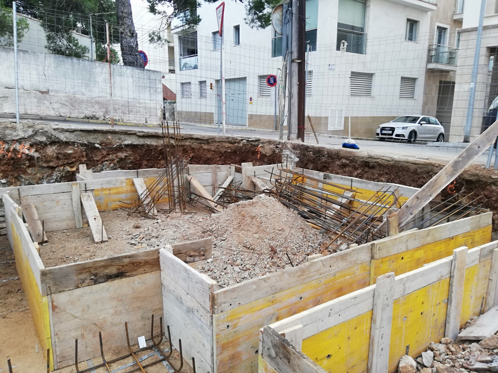

Obra nueva · Ejecución real
Estructura y
cimentación.
Proceso de ejecución desde la excavación y el replanteo hasta el encofrado, armado y hormigonado de los elementos estructurales.
← Volver a proyectos
Proceso constructivo
La estructura se demuestra durante la ejecución.
Documentamos las fases críticas de obra para mostrar lo que normalmente queda oculto cuando el proyecto está terminado: excavación, geometría, ferralla, encofrado y control de ejecución.







Construcción y reforma en Mallorca